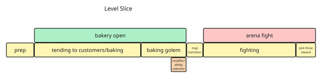

◆ What a Day Will Look Like

Each day is split between the bakery (daytime) and the arena (nighttime). The player manages baking and customer orders during open hours while also preparing their golem for the night's fight. The day ends when all customers are served, the walk-in oven is closed, and the oven dial is pressed.
◆ Demo — Unlock Order
The player starts with the sourdough and arepa recipes on Day 1, but only the sourdough golem recipe. On Day 2, Nonna gives the player chocolate and the muffin recipe. Players can also unlock recipes and ingredients by winning arena fights, jumping ahead of the default order.
Italic = Golem recipe | Bold = Special ingredient
Day 1Sourdough + Arepa
Day 2Muffin + Chocolate
Day 3Brownies
Day 4Melonpan + Pao de Queijo
Day 5Injera + Croissant
Day 6Almonds + Grissini
Day 7Cannoli + Cream Cheese
Day 8Simit + Blueberries
Day 9Cinnamon Roll + Babka
◆ Tutorials
II. Prep Phase — Sourdough & Arepa
Player learns where ingredients are. Player learns they and the counters hold one item at a time. Player learns the limit on mixer uses before opening the store.
III. Opening the Bakery — Complete a Customer Order
Player learns how to open the store. Customer interaction and effects on reputation: patience (waiting for assistance), take and make order, patience (waiting for order). Introduces the Recipe Book UI. Player learns ovens are in the basement.
IV. Reputation System Overview
What is Momentum and Renown. What affects your Renown and Momentum. Reputation tiers. What you gain from climbing the reputation tiers.
V. Golem Baking — Sourdough
Player learns the difference in time and resources between commercial baking and golem baking. Player learns how to place doughs into the walk-in oven. Player learns how to add modifier dough into arm slots for golem abilities.
VI. Finish the Rest of the Day!
VII. Fighting Arena
Small narrative intro. Introduce basics/UI (health bar, enemy stats). Inputs: basic attack (LMB), posture system. Golem abilities. FIGHT! Pick Three screen (golem cards, modifier cards, perk cards).